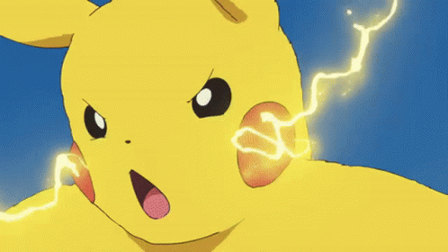
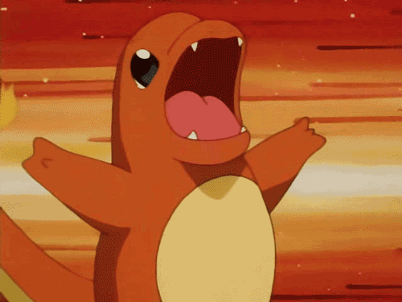
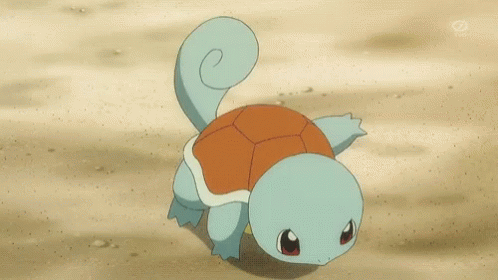

Pikachu es un pequeño Pokémon cuya morfología se encuentra basada en un roedor. Aunque su nombre y su categoría hagan alusión a un ratón, según su diseñadora, sus mejillas están basadas en las de una ardilla. Su cuerpo es de color amarillo con dos rayas marrones en su espalda y en la base de la cola. La punta de sus orejas de color negro, y presenta un gran círculo rojo en cada una de sus mejillas. Tiene una cola con forma de rayo si es macho y en forma de corazón si es hembra. Pikachu almacena una gran cantidad de electricidad en las bolsas que tiene en sus mejillas. Estas parecen cargarse eléctricamente durante la noche mientras duerme. En ocasiones libera electricidad estando medio dormido, como si soñara que lanza descargas eléctricas. A veces suelta unas pequeñas descargas cuando se acaba de despertar. Las mejillas de Pikachu también pueden ser recargadas mediante una descarga eléctrica dada por otro Pikachu. Es un Pokémon muy curioso, por lo que se puede ver cerca de asentamientos humanos. El hábitat principal de Pikachu es el bosque, alejado de las poblaciones humanas, donde puede encontrar bayas las cuales tuesta con su electricidad, por lo que si se encuentra una baya chamuscada tirada en el suelo, es muy probable que haya sido obra de Pikachu. Le gusta vivir en grupos, donde siempre mantienen la cola en alto para vigilar. En esta pose puede ser fácilmente alcanzado por algún rayo y si se siente amenazado o es molestado liberará toda la electricidad almacenada. La energía liberada de varios individuos juntos es capaz de generar tormentas eléctricas.

Charmander es un pequeño monstruo bípedo parecido a un lagarto. Sus características de fuego son resaltadas por su color de piel anaranjado y su cola, cuya punta está envuelta en llamas. Charmander y sus evoluciones, Charmeleon y Charizard, tienen una pequeña llama en la punta de sus colas desde que nacen. La intensidad con la que ésta arde es un indicador del estado de salud y emocional de este Pokémon: si la llama arde con mucha fuerza, indica que está completamente sano, y si arde muy levemente, significa que se encuentra débil. El Pokémon podría morir si la llama de su cola se apaga. Cuando son bebés aún no están familiarizados con el fuego, pudiendo llegar a quemarse a sí mismos. Viven en grupos, cuidando las llamas de sus colas entre sí. Prefieren los lugares silenciosos y rocosos. En estos lugares si se presta mucha atención, se pueden llegar a escuchar el tenue chisporroteo de su llama. Los lugares secos y cálidos son mejores para ellos, por lo que frecuentemente son encontrados en cuevas o en las cercanías de volcanes y montañas. En la lluvia es fácil reconocerlos por el vapor que emana de su cola, la cual seguirá ardiendo aunque se moje un poco. Al dormir usan su cola para calentarse.

Squirtle tiene forma de una tortuga semiacuática de una tonalidad azulada, su caparazón es color café, las placas periféricas de color blanco y finalmente su plastrón de una tonalidad crema, posee una cola con la punta enrollada, además de tres dedos en cada una de sus extremidades, una boca con una punta en forma de pico característico de las tortugas y unos grandes ojos de tonalidad rojiza. Al nacer su espalda se va hinchando hasta formarse un caparazón, al principio es blando y elástico, si lo golpeas este rebotará, pero conforme pasa el tiempo se irá endureciendo para resistir los ataques de cualquier amenaza, ocultándose dentro de él cuando siente peligro, al estar escondido puede lanzar una enorme presión de agua desde su interior cuando tiene la oportunidad. Igualmente retrae su cabeza y extremidades mientras duerme para sentirse seguro, a veces se puede llegar a ver como se mece su caparazón entre sueños. Su caparazón no solo le sirve de protección únicamente, con su forma redondeada y las hendiduras que posee, le sirven para reducir su resistencia en el agua y así poder nadar a enormes velocidades. Además de lanzar con gran precisión chorros de agua a presión por la boca, también puede lanzar espuma y usar su duro caparazón para atacar. Siempre se lo ve cerca del agua, ya sea dulce o salada.